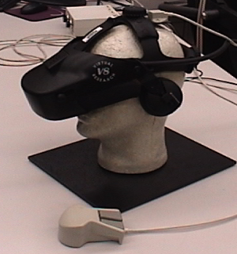
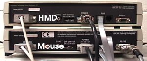
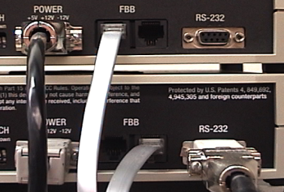
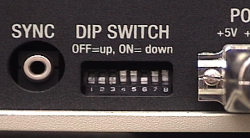
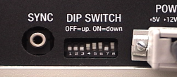

Ascension Flock of Birds Library: Example Setup
Introduction
Here's an example of the setup I use daily. I have two birds in my flock, a Head Mounted Display (HMD) and a 6DOF mouse.

Here you can see the back pannel of the two birds.

The two birds are connected to each other in a master slave configuration via the Fast Bird Bus (FBB).
The flock is connected to a GNU/Linux based PC via a standard RS232 cable.

Here's a close up of the dip switch settings for the HMD (top unit).

Here's a close up of the dip switch settings for the mouse (bottom unit).

The configuration above is know to work successfully with libfob.
If you use a different hardware configuration, and that configuration works with libfob, please let us know.